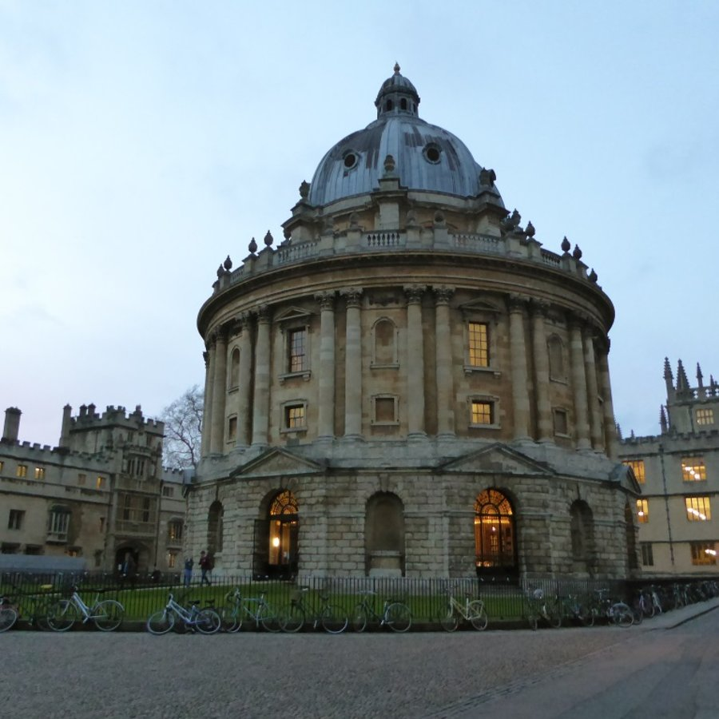

01 / THE REFERENCE
Original 3D model
Drag to rotate · Scroll or pinch to zoom
An artist-created toy car, used as a known reference for our experiment. Its fabric backdrop has been removed.
A CLOSER LOOK / 01
Explore the 3D reference alongside our brick reconstruction. Rotate each model to look around it, then play the sequence to see the pieces appear.
01 / THE REFERENCE
Drag to rotate · Scroll or pinch to zoom
An artist-created toy car, used as a known reference for our experiment. Its fabric backdrop has been removed.
02 / THE RECONSTRUCTION
Drag to rotate · Scroll to zoom
Loading sequence…
A CLOSER LOOK / 02
This separate 2D study uses a photograph of the Radcliffe Camera. Reveal its four-by-four sections to see the 128 × 128 mosaic come together.

Photo by JuliaC2006, CC BY 2.0; centre-cropped. Mosaic uses four approximate grayscale shades. This is a 2D plate layout; its mounting and physical build remain untested.
ABOUT THIS STUDY
This is a digital experiment using a 3D model as its starting point. The recorded sequence includes separate groups and proposed placements; it is not a finished instruction manual and has not been physically built or validated.
Our photo-to-3D work is a separate ongoing experiment. This example does not accept uploads or show a photograph converted into this car.
Toy Car by Guido Odendahl and Eric Chadwick, from the Khronos glTF Sample Assets, CC0; backdrop removed. Brick geometry is derived from the LDraw Parts Library; see part credits and licences. Source viewer: model-viewer, Apache 2.0. LDraw and LEGO are independent of MemGos.
.jpg){kind=link}